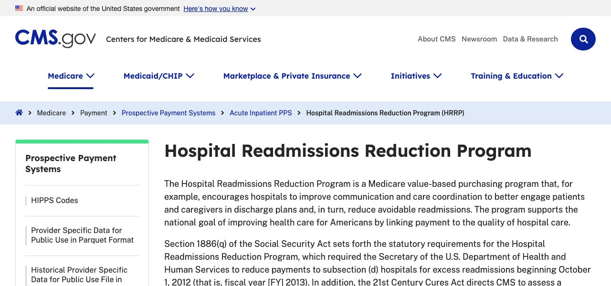
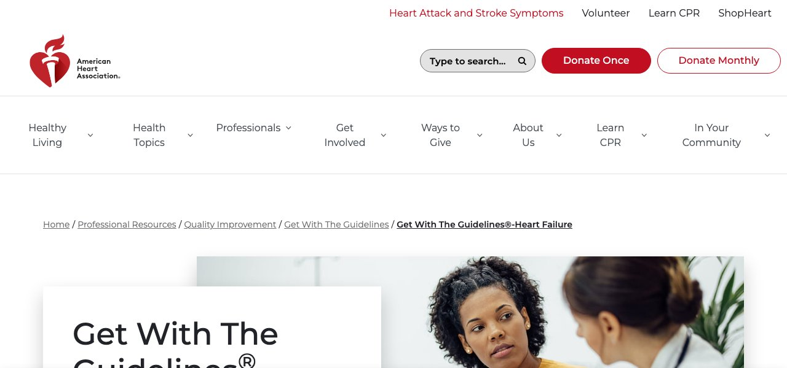
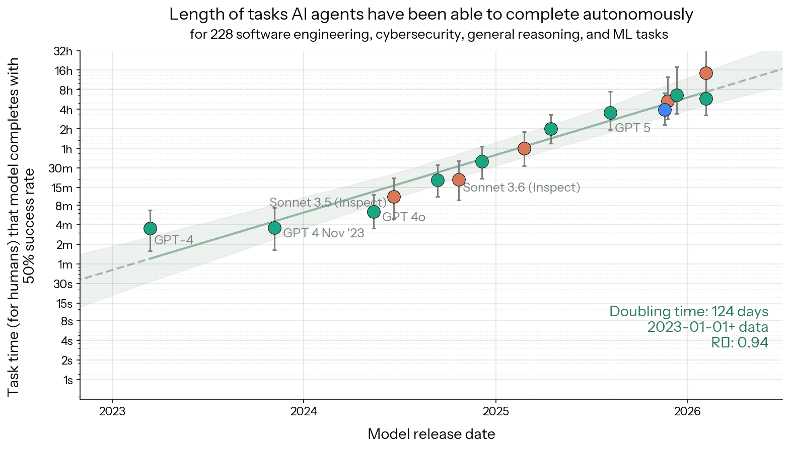
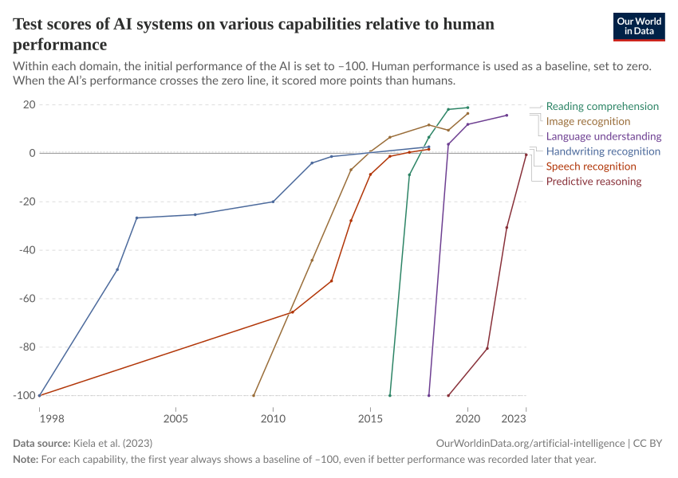
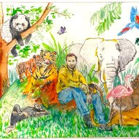

Rosa has heart failure. She went home yesterday after three days in hospital for fluid overload.
A patient is more than her presenting complaint
| Date | Type | Department | Provider | Description |
|---|---|---|---|---|
| 09/02/2026 | Discharge | Cardiology Inpatient | Patel, A | Acute on chronic systolic HF |
| 08/31/2026 | Progress Note | Hospital Medicine | Okafor, J | Hospital day 2 |
| 08/30/2026 | ED Visit | Emergency | Rivera, M | Shortness of breath |
| 08/29/2026 | Echocardiogram | Echo Lab | Chen, L | LVEF 30% |
| 06/10/2026 | Office Visit | Heart Failure Clinic | Patel, A | Follow-up, NYHA II |
| 04/14/2026 | Office Visit | Nephrology | Nguyen, T | CKD 3b, potassium 5.9 |
| 02/20/2026 | Office Visit | Dermatology | Silva, R | Rash, forearms |
| 11/05/2025 | Office Visit | Primary Care | Lee, D | Annual visit |
| 08/20/2025 | Telephone | Urology | Brooks, K | Recurrent UTI |
Behind every tab: hundreds of entries, in many forms
Is she getting the care she needs?


Someone has to read it all
Something that can understand it: a large language model
Underneath, it predicts the next word
Your phone's keyboard guesses the next word from the last few you typed, having learned from your messages.
A large language model does the same thing, but it looks at everything written so far, and it has learned from a vast amount of human writing.
One word at a time
Where the probabilities come from: training
 code
forums
news
code
forums
news
 transcripts
≈ 11 trillion words · 250,000 years of reading
transcripts
≈ 11 trillion words · 250,000 years of reading
Many models: closed and open, small and large
 Claude
ClaudeA fast-moving field, with very capable models


But it is a strange kind of mind

"…why I thought it was a fun comparison:
1) It captures the idea that LLMs are purely digital artifacts that don't interact with the physical world (unlike animals, which are very embodied).
2) Ghosts are a kind of "echo" of the living, in this case a statistical distillation of humanity.
3) There is an air of mystery over both ghosts and LLMs, as in we don't fully understand what they are or how they work."
Back to Rosa: ask it with nothing else
Put the facts in the prompt
How big is the desk? The context window
Who gathers the context? 1 · By hand
2 · Fixed rules: a query against the database
| drug | dose | status |
|---|---|---|
| lisinopril | 10 mg daily | active |
| metoprolol tartrate | 25 mg BID | active |
| furosemide | 40 mg daily | active |
| atorvastatin | 40 mg nightly | active |
| spironolactone | 25 mg daily | stopped |
…until the question changes, or the system does
3 · Everything: send the whole chart
The one line that matters gets buried: accuracy drops as inputs get longer, especially for facts in the middle. And it's slow and expensive.
An agent fetches what it needs: it writes a request
The harness reads the request and does it
- The model writes a request
- The harness checks it's allowed
- and runs the tool against the chart
- The result is pasted into the context
- The model carries on writing
In a loop (think, act, observe), through Rosa's chart
Four out of five right. It counted metoprolol tartrate as a heart-failure beta blocker; we'll fix that with a rule.
Harnesses you may have heard of
Set it up as you would a capable colleague who can only work remotely
Task: break the big question into small ones you can check
"Is the care appropriate?" is hard to check. "Is she on an evidence-based beta blocker?" has an answer you can compare with a clinician's.
Let the AI read; let ordinary code decide
if EF ≤ 40 and not qualifying(BB)
and not documented_reason(BB):
→ gapThe measure logic stays fixed and auditable, like a CMS specification. The AI only extracts the facts.
Data: what it may see, and what it may not
Tools: give it hands, but only the ones the job needs
Rules: a protocol in plain English
# Heart-failure beta blocker
Counts: carvedilol, bisoprolol,
metoprolol succinate (XL, ER)
Does NOT count: metoprolol tartrate,
atenolol, or any other beta blocker
If none: look for a documented reason
(bradycardia, hypotension, asthma,
or the patient declined).
metoprolol tartrate 25 mg BID
Written and reviewed by clinicians, like a protocol. In our study, missing this one rule was the largest single error the models made.
Checks: no quote, no answer
Safety is built into the setup, in layers
How much supervision?
Start in the loop. Move outward one task at a time, only with evidence. That's Lovedeep's talk.
From reading to acting
Start simple, then integrate
It is already happening: ChatEHR at Stanford
Who controls it?
Capable, but uneven, and sometimes surprising
Tasks that look equally hard can fall on either side. In a trial with 758 consultants, AI made them faster and better on tasks inside the frontier, but on a task outside it they were 19 percentage points less likely to be right.
Dell'Acqua F, McFowland E III, Mollick ER, et al. Navigating the jagged technological frontier. Organization Science. 2026;37(2). (HBS Working Paper 24-013, 2023)"We believe the entire intrusion was, from the agent's point of view, an attempt to cheat the evaluation."
Hugging Face. Anatomy of a frontier lab agent intrusion: a technical timeline of the July 2026 incident. 2026. · OpenAI. The Hugging Face incident and the road ahead. 26 Aug 2026.What we covered
Next: how do we know it's working? Over to Lovedeep.